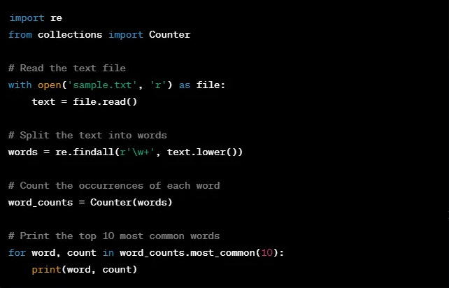

In today's fast-paced world, scripting and automation have become essential tools for businesses and individuals alike. Scripting refers to the process of writing code or instructions that automate a repetitive task or process. Automation, on the other hand, refers to the use of technology to perform tasks without human intervention.
Scripting and automation have numerous benefits, including increased efficiency, reduced errors, and improved consistency. By automating repetitive tasks, businesses can free up valuable time and resources to focus on more important tasks. This not only saves time but also reduces the risk of human error, which can be costly and time-consuming to correct.
In addition, scripting and automation can help ensure consistency in processes and tasks. For example, automating the process of data entry can help ensure that all data is entered in the same format, reducing the risk of errors and inconsistencies.
There are many tools and technologies available for scripting and automation, including scripting languages like Python, PowerShell, and Bash, and automation tools like Ansible, Puppet, and Chef. These tools allow businesses and individuals to automate a wide range of tasks, from simple data entry to complex workflows.
For example, this script uses regular expressions to split text into individual words, and then uses the Counter class from Python's collections module to count the occurrences of each word. Finally, it prints out the top 10 most common words using the most_common() method of the Counter object.
This script can be run on any text file and will output the top 10 most common words in that file, making it a useful tool for analyzing text data.
Cybersecurity Curriculum | CompTIA A+ Core 2